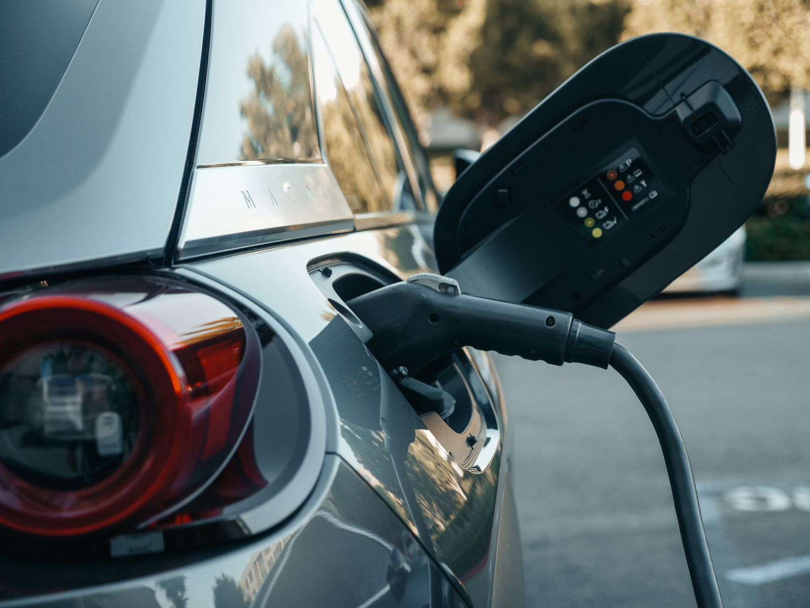

美 완성차 中부품 퇴출, 韓 소재 수혜 실제 구간은

미국 빅3(GM·포드·스텔란티스)와 테슬라는 현재 차량 원가의 30~40%를 차지하는 부품 중 중국산 비율이 평균 15~25%에 달하는 것으로 추정된다. 미국 행정부가 중국산 자동차 부품에 부과하는 관세는 2025년 기준 25%이며, 전기차 배터리 셀에는 추가 관세가 적용돼 실효 부담이 35~45%에 달한다.
교체 대상 품목 중 한국 기업이 단기에 대응 가능한 영역은 ①배터리 분리막(SK아이이테크놀로지·더블유씨피), ②전기차용 동박(일진머티리얼즈·SK넥실리스), ③알루미늄 다이캐스팅 소재(고려알루미늄·동양피스톤) 세 분야다. 분리막 시장에서 한국산은 이미 글로벌 시장 점유율 25%를 확보하고 있어 증량 여지가 있다.
반면 한국이 취약한 영역은 전장(電裝) 커넥터·센서류다. 중국 제조사 JAE·Amphenol 중국 공장 의존도가 높은 품목인데, 국내 대체 공급사가 없어 일본 야자키(Yazaki)나 독일 TE Connectivity로 수요가 이동할 가능성이 크다. 이 영역에서 한국의 수혜는 제한적이다.
테슬라는 2025년 하반기부터 중국산 구동 모터 코어에 사용하는 무방향성 전기강판을 포스코퓨처엠 기반 국내산으로 전환하는 계약을 검토 중인 것으로 파악된다. 전기강판은 전 세계 공급의 35%를 중국 바오산강철(Baosteel)이 담당하며, 미국 내 조달 전환 시 한국·일본이 주요 수혜국이 된다.
미국 완성차의 중국 부품 '완전 제거' 선언은 실상 2~3년에 걸친 단계적 교체 계획이다. 당장 내년 납품 계약을 바꾸기 위해서는 미국 IATF 16949 품질 인증 재취득과 OEM별 PPAP(양산 부품 승인 프로세스) 절차가 필요하며, 최소 18~24개월이 걸린다. 현장에서는 이 인증 기간이 가장 큰 병목이다.
한국 소재 기업 입장에서 이 흐름은 '가격 경쟁'이 아닌 '공급망 안전성 프리미엄' 싸움이다. 중국산 대비 10~20% 높은 단가를 받을 수 있는 구조가 형성되고 있으며, 일부 분리막·동박 고객사는 이미 '중국 비율 제로' 조건을 신규 계약에 삽입하고 있다.
그러나 완성차 교체 수요가 한국 소재 기업 전체에 고르게 돌아오지는 않는다. 이미 미국 현지 또는 멕시코 공장을 가진 기업이 우선 수혜를 받을 가능성이 높다. SK아이이테크놀로지는 미국 조지아 공장을 운영 중이며, 이는 현지 공급 인증 취득에서 결정적 이점이다.
전기차 분리막 분야에서 SK아이이테크놀로지(미국 조지아 공장 보유)와 더블유씨피는 중국산 교체 수요의 직접 수혜권에 있다. 전 세계 분리막 수요는 2025년 기준 약 70억㎡로 추정되며 이 중 중국산 점유율은 45%에 달한다. 미국 시장에서 이 물량의 30%만 전환돼도 한국 기업 증량 여지는 연 10억㎡ 이상이다.
포스코퓨처엠·현대제철은 무방향성 전기강판 교체 수혜를 받을 위치다. 테슬라 외에 GM도 구동 모터 소재 조달처 다변화를 검토 중이며, 한국산 전기강판의 대미 수출 증가 가능성이 2026년부터 가시화될 수 있다.
중국 배터리 소재 기업(CATL 소재 계열, 베이징 당솔 등)은 미국 시장 퇴출 압박이 본격화된다. 이미 LG에너지솔루션·삼성SDI·SK온이 미국 완성차와의 계약에서 중국산 양극재·분리막 비율을 줄이는 조건을 수용하고 있어, 중국계 소재 공급사의 미국향 수주가 구조적으로 감소한다.
일본 야자키·독일 TE Connectivity는 커넥터·센서 교체 물량을 일부 흡수하겠지만, 한국 기업이 이 시장에서 경쟁력을 확보하지 못하면 수혜의 절반은 일본·유럽으로 빠져나간다. 한국 관점에서는 '빠진 수혜'라는 기회비용 손실이 발생한다.
분리막·동박·전기강판을 공급하는 한국 소재 기업은 지금 당장 미국 OEM의 PPAP 일정을 역산해야 한다. 2026년 납품을 목표로 한다면 2025년 3분기 내에 초도 샘플 제출을 마쳐야 하며, 이미 미국 현지 법인이나 창고를 보유하지 않은 기업은 물류 인증에서 경쟁에서 밀릴 수 있다.
투자자 관점에서는 '미국 공장 보유 여부'가 수혜 기업 선별의 1차 필터다. SK아이이테크놀로지(조지아), SK넥실리스(말레이시아 경유 미국 납품 가능), 포스코퓨처엠(캐나다 공장 건설 중)이 1군 수혜군이며, 국내 공장만 보유한 기업은 2028년 이전 실적 반영이 제한적이다.
구매 담당자 입장에서는 이 흐름을 역이용할 여지도 있다. 중국산 부품 교체 수요가 급증하면 한국 소재 공급사의 납기 여유가 줄어들고 단가도 올라간다. 지금 2026~2027년분 물량을 선점 계약하면 현재 단가를 고정할 수 있다.
실제 조달 현장에서는 — 2024년 하반기부터 미국 완성차 구매팀이 한국 분리막·동박 공급사에 '중국산 비율 인증서'를 요구하는 사례가 늘어났다. 단순 원산지 증명을 넘어 원재료 단계까지 중국 연루 여부를 소명하도록 요청하는 경우가 생기고 있으며, 이는 공급망 실사 범위가 소재 2~3차 협력사까지 확대됐다는 신호다. 미리 원재료 공급망 지도를 만들어두지 않은 기업은 인증 과정에서 탈락하는 사례가 나올 것이다.
이 포스팅은 쿠팡 파트너스 활동의 일환으로 수수료를 제공받습니다.